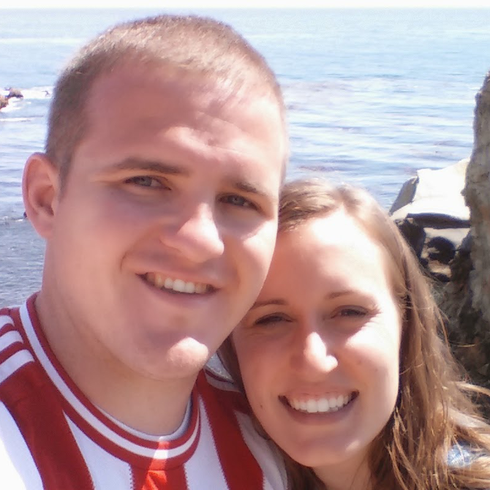

I'm a PhD student of Computer Science at Brigham Young University with the BYU IDeA Labs and a PhD Intern for the Pacific Northwest National Laboratory. After growing up in various parts of California, I left to serve an LDS mission in 2010 in Paraguay.
Afterwards, I completed an Associates degree at the LDS Business College before transferring to Brigham Young University where I'm currently at and where I met my lovely wife Ashley, pictured here. I graduated in April 2016, earning a Bachelor of Science in Computer Science, and then became a PhD student in Computer Science in September of that same year.
My academic interests are centered in Computer Science where I am pursuing research in regards to cyber-security from a controls theory perspective. I also enjoy learning more about data science, machine learning, "big data" processing, distributed systems, and various programming languages.
Outside of computer science and programming in general, I enjoy spending time with my wonderful wife Ashley (pictured here with me) and our great daughter Elizabeth, free weight lifting, metalworking (more on this in the future), building computers, playing video games, hiking, camping, and traveling in general.
My missionary service in Paraguay has been one of the defining experiences in my life. I'm very grateful for the opportunity to have met some amazing people and share a message that means the world to me. Below are some albums from different areas where I resided over the course of my two year mission.
| Mission Areas and Duration | |
|---|---|
| Puente Kyjha, Canindeyu | March - June 2010 |
| Aratiri, Capiata, Departamento Central | June - December 2010 |
| Mariano Roque Alonso, Departamento Central | December 2010 - January 2011 |
| Campo Grande, Asuncion | January - July 2011 |
| Horqueta, Concepcion | July - November 2011 |
| Tayuasape, San Lorenzo, Departamento Central | November 2011 - February 2012 |
After 7 years in scouting, I achieved the rank of Eagle Scout. My project consisted of removing an existing flagpole that was too small and installing a custom made one that was twice as large. The flagpole sits adjacent to a memorial to fallen aerial firefighters outside of the Porterville Air Attack Base in Porterville, California.
An album of the project and a small article from the local newspaper about the project may be viewed at the following links: